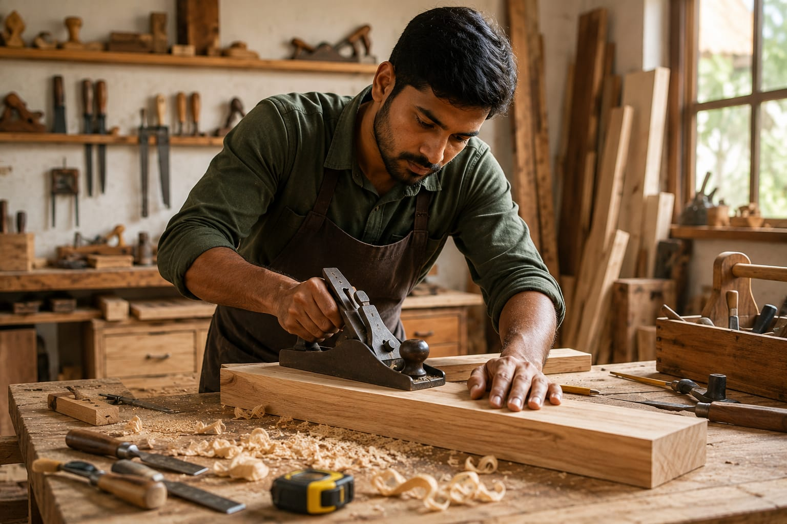

- Imagine you are building a new house.
- You need wooden doors, windows, tables, cupboards, and furniture.
- Someone should carefully cut, shape, and assemble the wood properly.
- That person is called a Carpenter.
- 👉 In simple words: Carpenters make, install, and repair wooden furniture and wooden structures.
Carpenter
🧑🎨 What Do They Do?

🎓 How to Become a Carpenter
These Carpentry programs help students learn woodworking, furniture making, measuring, cutting, polishing, and practical carpentry skills used in homes, construction, and interior work.
ITI in Carpenter
Duration: 1 Year (2 Semesters)
Eligibility: 10th Pass
Entrance Exam: Merit Based Admission
Diploma in Woodworking Technology / Interior Design
Duration: 3 Years
Eligibility: 10th Pass with Science and Mathematics
Entrance Exam: State Polytechnic Entrance Exams
📝 Exam Details
(Click on the exam name to see full details)
Merit Based Admission State Polytechnic Entrance ExamsNote: Carpentry programs include practical woodworking training, tool handling, furniture making, polishing, measurements, and workshop practice.
These advanced Carpentry and Furniture Design programs help students learn furniture making, interior woodworking, cabinet design, CNC wood machining, and modern woodworking technology.
B.Voc (Bachelor of Vocation) in Woodworking Skills / Interior & Furniture Design
Duration: 3 Years
Eligibility: 12th Pass from any stream
Entrance Exam: CUET UG or University Entrance Exams
Advanced Diploma in Furniture Design and Cabinet Making
Duration: 1 Year
Eligibility: 12th Pass or ITI Certificate
EntranceExam: Merit-Based Admission
📝 Exam Details
(Click on the exam name to see full details)
CUET UG University Entrance Exams Merit Based AdmissionNote: These programs include furniture designing, woodworking practice, machine operations, cabinet making, polishing, CAD designing, and practical workshop training.
These certification programs help students learn practical carpentry skills, furniture making, CNC woodworking, and modern furniture design techniques.
Assistant Carpenter Certification (NSQF Level 3)
Duration: 3 Months (Approx. 350–400 Hours)
Eligibility: 8th or 10th Pass
Provider: National Skill Development Corporation (NSDC) / Sector Skill Council
Certificate in Computerized Furniture Design and CNC Wood Machining
Duration: 1 – 2 Months
Eligibility: 10+2 Pass or ITI/Diploma holders
Provider: CADD Centre Training Services / Specialized CAD Training Institutes
Note: These certification courses mainly focus on practical woodworking skills and industry-based training.
Note:
(Age limits, marks, and admission process may vary depending on the college or state. These courses are available in many colleges and universities across India. You can choose colleges based on your location, budget, and entrance exams.)
🏛️ Top Colleges & Institutes for Carpentry in India
(Tap on a college to view details)
After 10th (ITI & Skill Training)
Government Industrial Training Institute (ITI), Pusa (New Delhi) Government Industrial Training Institute (ITI), Aundh (Pune) Government Industrial Training Institute (ITI), Malviya Nagar (Jaipur) Government Polytechnic, MumbaiSTEP 1
Imagine you are working as a Carpenter.
STEP 2
A family wants a new wooden door for their home and approaches you.
STEP 3
You visit the house and carefully take the measurements for the door.
STEP 4
You start cutting, shaping, and assembling the wood to make the door.
STEP 5
After a few days, you complete the door and install it perfectly in the house.
STEP 6
If building wooden items and creating things with your hands excites you, this career may suit you.
🏠
Homes
Make and install doors, windows, cupboards, and furniture for houses.
🏢
Construction Sites
Work on wooden structures and fittings in buildings and offices.
🪑
Furniture Workshops
Create tables, chairs, beds, shelves, and other wooden furniture.
🏬
Interior Design Companies
Help design and build modern wooden interiors and decorations.
🛠️
Repair & Maintenance Services
Repair damaged furniture, doors, windows, and wooden fittings.
🏭
Wood Factories
Operate machines and produce wooden products in large quantities.
🚪
Modular Kitchen Companies
Build kitchen cabinets, storage units, and wooden fittings.
✈️
Abroad Opportunities
Work in furniture companies, construction projects, and interior design industries in different countries.
(Click Yes or No for each question)
1. Have you ever thought about making wooden things like tables, doors, or shelves?
2. Do you like working with tools and wood?
3. Are you interested in learning how tables and chairs are made?
4. When you see a beautiful door or table, have you ever thought, “I want to create something like this?”
5. Imagine a family asks you to make a beautiful wooden cupboard for their home. You measure the space, cut the wood carefully, and create a cupboard that fits perfectly. Does this excite you?